Protects downstream APIs, databases, and budgets from retry storms, recursive tool loops, and cascading bans without interrupting legitimate parallel work.
When an upstream API returns an error or tool output lacks expected schema fields, autonomous agents often enter frantic recovery loops. They hammer the same failing endpoint, run up cloud API bills in minutes, and risk permanent account bans on services like WhatsApp Business or Stripe.
Traditional API gateways count raw requests per minute. They cannot tell the difference between an agent reading 10 documents in parallel during a RAG fanout and an agent stuck in a death loop hitting the same tool 10 times with identical arguments.
Fuse sits between your agent runtime and the internet. Agents simply configure their outbound base URL through Fuse. No agent harness code or prompts need modification.
Evaluates request velocity, tool argument entropy, and downstream error codes to distinguish benign parallel fanout from stuck retry storms.
Every decision, layer evaluation, and throttled request is appended to a cryptographic SHA-256 hash-chained ledger for operational compliance.
Pure sliding-window arithmetic. Enforces hard maximum calls per time window (< 1 ms latency). No model output can bypass this failsafe barrier.
Sub-100ms typed classification. Analyzes request velocity and argument signatures to classify traffic into parallel work, retry storm, or loop bug.
Invoked only when Jev triggers its escape hatch or reports low confidence. Inspects full session history to deliver root-cause analysis and remediation.
Agent issues 10 simultaneous searches across distinct documents. Jev recognizes legitimate parallel intent with 0.88 confidence and forwards all calls without throttling.
Agent repeatedly hammers an HTTP 503 endpoint with identical arguments. Fuse detects a retry storm, injects exponential backoff, and saves the downstream API.
Agent alternates between two tools without making progress. Jev triggers its escape hatch to Gemini 3.8 Flash, which diagnoses circular recursion and recommends tool isolation.
Agent goes rogue firing 25 calls in 2 seconds against a 20-call limit. Layer 1 pure arithmetic hard-blocks calls 21 to 25 with HTTP 429. Zero AI bypass possible.
| Capability | Standard Rate Limiter | Hardcoded Agent Iteration Caps | Fuse Intelligent Proxy |
|---|---|---|---|
| Parallel RAG Bursts | Blocks requests (false positive) | Consumes allowed iterations prematurely | Recognizes parallel intent, forwards |
| Stuck 503 Retry Storms | Burns through budget until limit | Stops only after iteration exhausted | Injects backoff automatically |
| Unmodeled Tool Loops | Cannot detect alternating tools | Blind to semantic deadlocks | Gemini root-cause diagnosis |
| Failsafe Reliability | Deterministic only | No external monitoring | Deterministic floor overrides AI |
Judged by Issam Allani on prototype reliability and technical execution.
Fuse guarantees safety without depending on model uptime. When tested with 25 rapid calls, Layer 1 pure arithmetic hard-blocks calls 21 to 25. The safety floor holds even if AI APIs time out or fail.
Evaluates purposeful technical use of AI models and workflows.
Fuse implements a deliberate two-tier AI cascade. A fast classifier handles millisecond anomaly triage, while Gemini 3.8 Flash conducts deep semantic diagnosis on escalation, outputting actionable remediations.